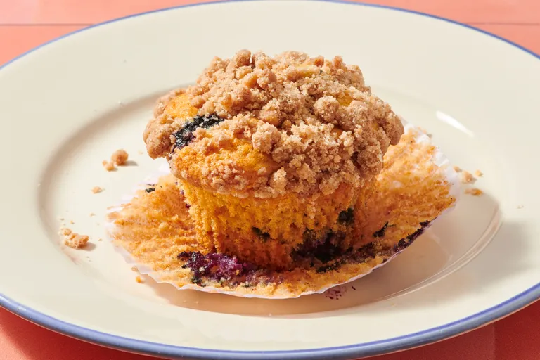

Blue Berry Muffin

Blue Berry Muffin Recipe
This is a blue berry muffin cake recipe you can do at home
With simple home ingredients.
Ingredients
- 1 ½ cups all-purpose flour
- ¾ cup white sugar
- 2 teaspoons baking powder
- ½ teaspoon salt
- ⅓ cup vegetable oil
- 1 large egg
- ⅓ cup milk, or more as needed
- 1 cup fresh blueberries
Recipe Steps
- Gather all ingredients.
- Preheat the oven to 400 degrees F (200 degrees C). Grease 8 muffin cups or line with paper liners.
- To make the muffins: Whisk flour, sugar, baking powder, and salt together in a large bowl.
- Pour oil into a small liquid measuring cup. Add egg and enough milk to reach the 1-cup mark; stir until combined.
- Pour into flour mixture and mix just until batter is combined. Fold in blueberries; set batter aside.
- Spoon batter into the prepared muffin cups, filling right to the top.
- Bake in the preheated oven until a toothpick inserted in the center of a muffin comes out clean, 20 to 25 minutes. Enjoy!